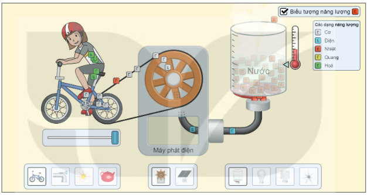
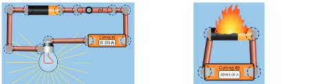
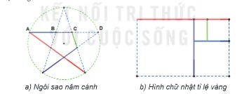

Dành cho giáo viên
Theo dõi lớp
| Học sinh / Nhóm | Đã nộp | Cập nhật |
|---|
Bước 1
1 Khởi động
Khám phá Hình ảnh khởi động
Trò chuyện Cùng An, Minh và Khoa
Đoạn trò chuyện gợi mở (không có trong SGK)
Minh: Tớ muốn xem các hành tinh quay quanh Mặt Trời mà không có kính thiên văn.
An: Tớ thì muốn làm thí nghiệm điện nhưng sợ nguy hiểm.
Khoa: Dùng phần mềm mô phỏng – phòng thí nghiệm ảo ngay trên máy tính!
An: Tớ thì muốn làm thí nghiệm điện nhưng sợ nguy hiểm.
Khoa: Dùng phần mềm mô phỏng – phòng thí nghiệm ảo ngay trên máy tính!
Khởi động Thí nghiệm ảo
Phần mềm mô phỏng trình bày các hiện tượng khoa học bằng cách sử dụng hình ảnh động hay ba chiều, giúp em cảm nhận được sự vận động của các đối tượng. Bằng cách tương tác, khám phá nhiều chức năng của phần mềm mô phỏng dạng thí nghiệm ảo, em không chỉ bổ sung kiến thức về khoa học, toán học, học cách giải quyết một số vấn đề đặt ra trong công nghệ mà còn có thể phát hiện được những điều mới mẻ.
Ghi bài Khởi động
Sau khi thầy cô chốt, em chép nội dung dưới đây vào vở.
Bước 2 · Thực hành
2.1 Nhiệm vụ 1. Chuyển hoá năng lượng
Thực hành a) Mở cửa sổ mô phỏng
- Khởi động trình duyệt web, nhập https://phet.colorado.edu/ vào thanh địa chỉ.
- Di chuyển đến cuối trang web, chọn ngôn ngữ hiển thị là Tiếng Việt (Hình 6.1).
- Chọn mục CÁC MÔ PHỎNG → Hoá học (Hình 6.2) → Năng lượng: các dạng và sự chuyển hoá, nháy nút ▶ để mở cửa sổ tương tác (Hình 6.3).
Thực hành b) Tương tác với phần mềm
Trong cửa sổ, em có thể quan sát được sự chuyển hoá của các dạng năng lượng thông qua những biểu tượng. Em cũng có thể tương tác bằng cách chọn:
- Nguồn năng lượng: người đạp xe, ánh sáng mặt trời, vòi nước chảy, ấm nước sôi.
- Thiết bị chuyển hoá năng lượng thành điện năng: pin mặt trời, máy phát điện.
- Thiết bị tiêu thụ điện: bếp điện, bóng đèn sợi đốt, bóng đèn compact, quạt điện.

Ghi bài Nhiệm vụ 1
Sau khi thầy cô chốt, em chép nội dung dưới đây vào vở.
Bước 2 · Thực hành
2.2 Nhiệm vụ 2. Đo cường độ dòng điện
Thực hành a), b) Truy cập phần mềm và vẽ mạch điện
- Thực hiện tương tự Nhiệm vụ 1, chọn CÁC MÔ PHỎNG → Vật lý → Bộ lắp ráp mạch điện: DC – Phòng thí nghiệm ảo.
- Kéo các biểu tượng Pin, Đèn tròn, Ampe kế, Công tắc và Dây nối, thả vào vùng hiển thị; kết nối các thành phần của mạch điện (Hình 6.5a).
- Lưu ý: ampe kế cần mắc nối tiếp với đoạn mạch cần đo và không mắc trực tiếp vào hai cực của nguồn điện (Hình 6.5b).

Thực hành c) Trình bày giải pháp
Ghi bài Nhiệm vụ 2
Sau khi thầy cô chốt, em chép nội dung dưới đây vào vở.
Bước 2 · Thực hành
2.3 Nhiệm vụ 3. Tỉ lệ vàng trong ngôi sao năm cánh
Thực hành Đo độ dài và tính tỉ lệ
Sử dụng công cụ đo và tính toán trong phần mềm mô phỏng hình học (Geometer's Sketchpad, GeoGebra,…): mở tệp có sẵn ngôi sao năm cánh, chọn đoạn thẳng AB rồi chọn Measure/Length để đo; đo tương tự BC, AC, AD; dùng Number/Calculate... để tính tỉ lệ. Nếu phòng máy chưa có phần mềm, em dùng ngôi sao mô phỏng dưới đây: kéo thanh trượt để thay đổi kích thước ngôi sao.
Thực hành d) Khám phá tri thức
Thay đổi kích thước ngôi sao, em sẽ thấy số đo các đoạn thẳng AB, BC, AC và AD cũng thay đổi theo. Điều đáng kinh ngạc là dù độ dài các đoạn thẳng thay đổi nhưng tỉ lệ giữa chúng không thay đổi, luôn bằng nhau và xấp xỉ 1,62. Tỉ lệ trên có tính chất đặc biệt, được gọi là tỉ lệ vàng. Một hình chữ nhật có tỉ lệ hai cạnh là tỉ lệ vàng thì sau khi cắt bỏ một hình vuông, phần còn lại cũng có tỉ lệ hai cạnh là tỉ lệ vàng (Hình 6.8b).

Ghi bài Nhiệm vụ 3
Sau khi thầy cô chốt, em chép nội dung dưới đây vào vở.
Bước 3
3 Luyện tập
Luyện tập Đo điện áp
Em hãy nêu giải pháp đo điện áp giữa hai đầu một điện trở bằng cách sử dụng phần mềm mô phỏng.
Ghi bài Luyện tập
Sau khi thầy cô chốt, em chép nội dung dưới đây vào vở.
Bước 4
4 Vận dụng
Vận dụng Điện trở, cường độ dòng điện, điện áp
Trong phần mềm mô phỏng, em có thể lắp ráp mạch điện gồm: nguồn điện, công tắc, điện trở, ampe kế, vôn kế. Bằng cách thay đổi trị số của các linh kiện, hãy khám phá quy luật phụ thuộc lẫn nhau giữa điện trở, cường độ dòng điện qua nó và điện áp giữa hai đầu điện trở đó.
Ghi bài Vận dụng
Sau khi thầy cô chốt, em chép nội dung dưới đây vào vở.